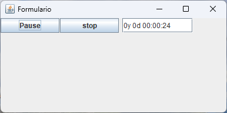

| Arquivo: ExemploJava.java |
| import javax.swing.*; import java.awt.*; import java.awt.event.*; public class ExemploJava extends JFrame { private JTextField posicao; private JButton play_pause; private JButton stop; int pos = 0; int tempo = 1000; boolean Xplay_pause = false; String play_pause_text = "Play"; Long k = (365 * 24 * 60 * 60) * 1L; Long z = 0L; String s = ""; public ExemploJava() { super("Formulario"); this.setSize(400,200); this.setLocation(50, 100); Container ct = this.getContentPane(); ct.setLayout(null); play_pause = new JButton("Play"); play_pause.setBounds(0,0,100,25); ct.add(play_pause); stop = new JButton("stop"); stop.setBounds(101,0,100,25); ct.add(stop); posicao = new JTextField("0y 0d 00:00:00"); posicao.setBounds(207,0,120,25); ct.add(posicao); Image Icone = Toolkit.getDefaultToolkit().getImage("icon.gif"); setIconImage(Icone); this.setVisible(true); stop.addActionListener(new ActionListener() { public void actionPerformed(ActionEvent e) { int xPos = xStop(); posicao.setText("0y 0d 00:00:00"); }}); play_pause.addActionListener(new ActionListener() { public void actionPerformed(ActionEvent e) { play_pause.setText(getPlayPause()); }}); this.addWindowListener(new WindowAdapter() { public void windowClosing(WindowEvent e) { System.exit(0); }}); } public static void main(String[] args) { new ExemploJava(); } public int xStop(){ pos = 0; Xplay_pause = false; play_pause.setText("Play"); return pos; } public int xPosicao(int x){ pos = x; return pos; } public int xTempo(int x){ tempo = x; return tempo; } public String getPlayPause(){ if(Xplay_pause == false){ Xplay_pause = true; getPlay(); play_pause_text = "Pause"; } else { Xplay_pause = false; play_pause_text = "Play"; } return play_pause_text; } public void getPlay(){ Thread runner = new Thread(new Runnable() { public void run() { while(Xplay_pause == true) { pos = pos + 1; try { Thread.sleep(tempo); } catch (Exception ex) {} k = pos * 1L; z = Long.parseLong(""+(k/(365 * 24 * 60 * 60))); s = ""+z+"y "; k = k % (365 * 24 * 60 * 60); z = Long.parseLong(""+(k/(24 * 60 * 60))); s = ""+s+z+"d "; k = k % (24 * 60 * 60); z = Long.parseLong(""+(k/(60 * 60))); s = ""+s+ ((z < 10) ? "0" : "") +z+":"; k = k % (60 * 60); z = Long.parseLong(""+(k/(60))); s = ""+s+ ((z < 10) ? "0" : "") +z+":"; k = k % (60); z = k % 60; s = ""+s+ ((z < 10) ? "0" : "") +z; posicao.setText(""+s); } }}); runner.start(); } |